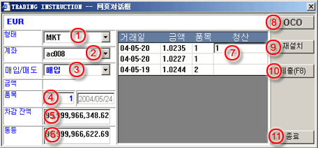

시장 주문
거래 지시사항 대화창이 거래 패널을 통해 활성화될 때, 다음 정보를 완성하세요:
| 1 | 유형 - 시장 주문은 MKT를 선택 |
 MKT
주문 작성 대화창 |
| 2 | 계좌 - 주문에 대한 거래 계좌 선택 | |
| 3 | 비에스 (B/S) - 주문에 대한 구매/판매 선택 | |
| 4 | Lot - 거래에 대한 계약량 입력 | |
| 5 | 잔액 - 선택된 계좌의 한계 잔액 | |
| 6 | 순가 - 선택된 계좌의 한계 순가 | |
| 7 | 마감 - 거래이 정산 목적이면 개방 주문에 상응하는 양 입력 | |
| 8 | OCO - 해당사항 없음 | |
| 9 | Reset - 마감을 위해 입력된 양을 reset하기 위한 버튼 | |
| 10 | 제출(F8) - 거래 데스크에 주문을 제출하기 위한 버튼 | |
| 11 | 퇴장 - 거래 지시사항 대화창을 퇴장하기 위한 버튼 |
MKT 주문이 성공적으로 거래 데스크에 놓이면, 수락을 표시할 참고 코드와 미확인 상황을 나타내는 주문이 실행 주문 패널에 리스트화 될 것이다. 미확인 상황은 주문이 실행을 위해 확인되지 않거나 취소되지 않는 한 보여질 것이다.
유의사항: